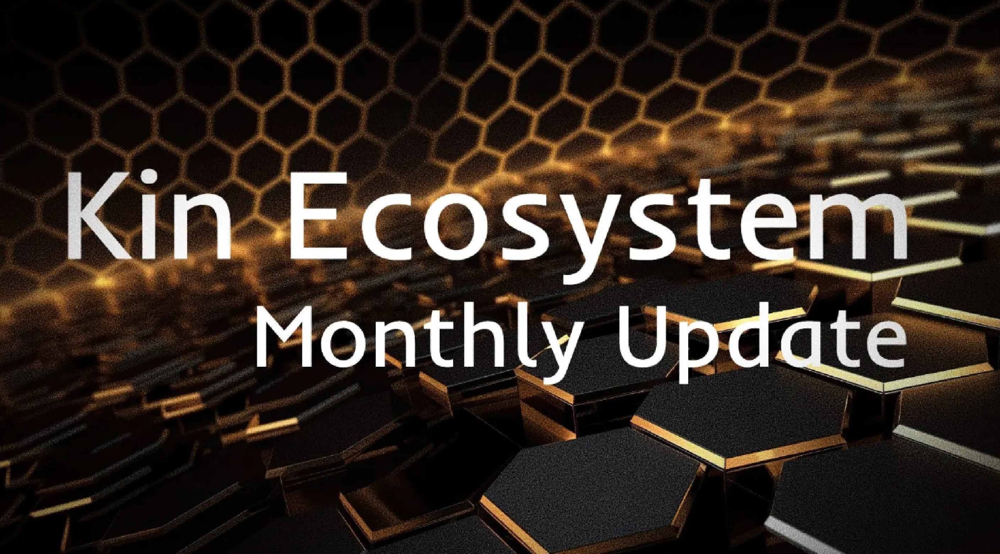
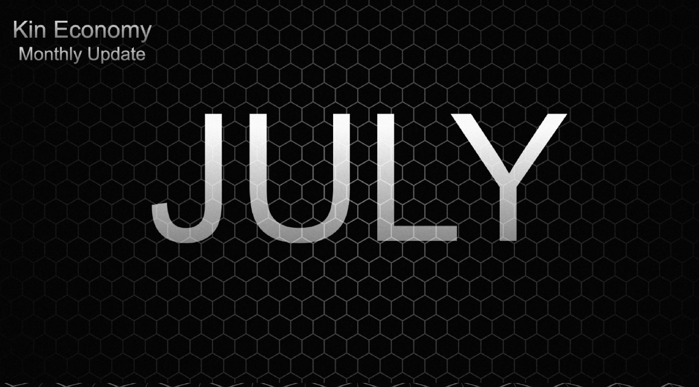
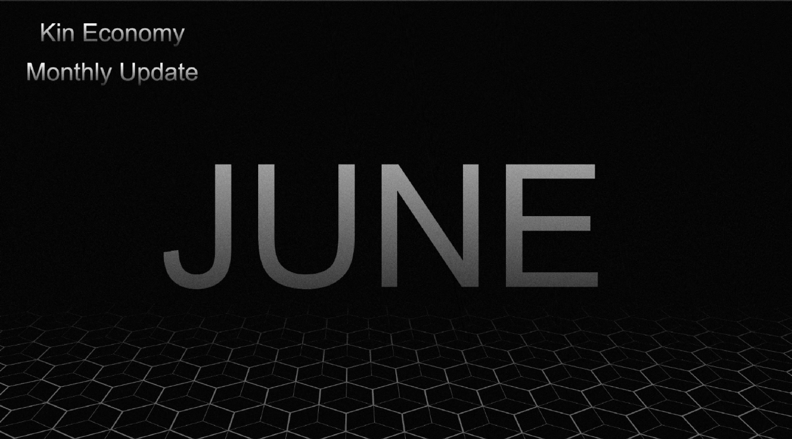
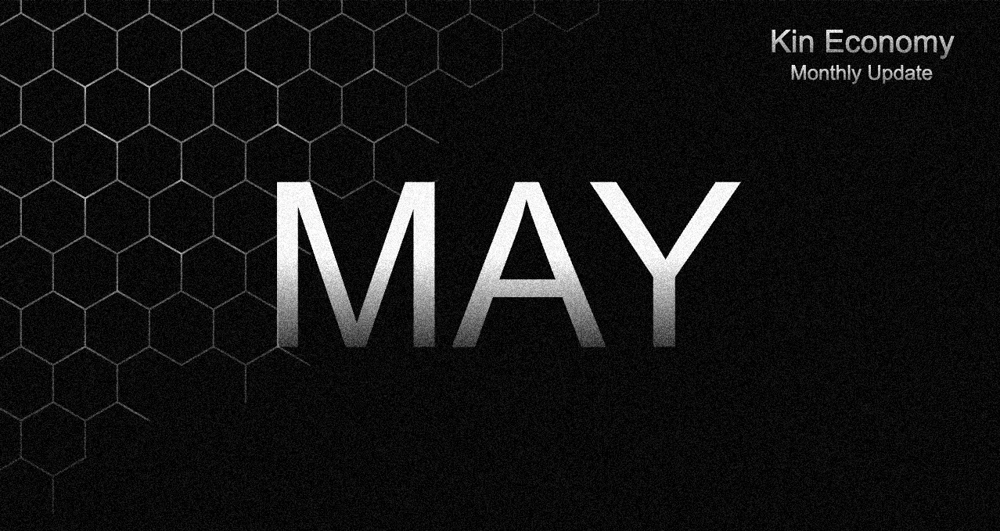

<!-- Monthly Posts Page 2 Content -->
<!-- Monthly Container -->
<section id="monthly-container">
    <div id="monthly-community-posts">
        <section class="monthly-posts">
            <article>
                <header>
                    <span class="date">August 2024</span>
                    <h2><a href="https://www.ofidcrypt.com/community#community-featured-image">Kin Economy<br /> August Update</a></h2>
                </header>
                <a href="https://www.ofidcrypt.com/community#community-featured-image" class="image fit"></a>
                <p><b>This article is unavailable.</b> Purchases support the writer. 
                    Optionally, you can leave a tip at the end of Pennypost articles to show gratitude to the contributor. 
                    Code app required to purchase from Pennypost, download from <b><a href="https://getcode.com">here</a>.</b></p>
                <ul class="actions special">
                    <li><a href="https://www.ofidcrypt.com/community#community-featured-image" class="button">Preview</a></li>
                </ul>
            </article>

            <article>
                <header>
                    <span class="date">July 2024</span>
                    <h2><a href="https://kineconomy.medium.com/kin-economy-monthly-update-07-24-7bd5cb1a6cde">Kin
                            Economy<br /> July Update</a></h2>
                </header>
                <a href="https://kineconomy.medium.com/kin-economy-monthly-update-07-24-7bd5cb1a6cde"
                    class="image fit"></a>
                <p><b>This article is published on Medium</b> 
                    and is available for free. 
                    Optionally, you can leave a tip <a href="https://tipcard.getcode.com/x/KinShipsX"><b>here</b></a> 
                    to show gratitude to the contributor.</p>
                <ul class="actions special">
                    <li><a href="https://kineconomy.medium.com/kin-economy-monthly-update-07-24-7bd5cb1a6cde"
                            class="button">Preview</a></li>
                </ul>
            </article>

            <article>
                <header>
                    <span class="date">June 2024</span>
                    <h2><a href="https://kineconomy.medium.com/kin-economy-monthly-update-06-24-9dee8aaaf069">Kin
                            Economy<br /> June Update</a></h2>
                </header>
                <a href="https://kineconomy.medium.com/kin-economy-monthly-update-06-24-9dee8aaaf069"
                    class="image fit"></a>
                <p><b>This article is published on Medium</b> 
                    and is available for free. 
                    Optionally, you can leave a tip <a href="https://tipcard.getcode.com/x/KinShipsX"><b>here</b></a> 
                    to show gratitude to the contributor.</p>
                <ul class="actions special">
                    <li><a href="https://kineconomy.medium.com/kin-economy-monthly-update-06-24-9dee8aaaf069"
                            class="button">Preview</a></li>
                </ul>
            </article>

            <article>
                <header>
                    <span class="date">May 2024</span>
                    <h2><a href="https://medium.com/@kinshipsx/kin-economy-monthly-update-05-24-fc9860154955">Kin
                            Economy<br /> May Update</a></h2>
                </header>
                <a href="https://medium.com/@kinshipsx/kin-economy-monthly-update-05-24-fc9860154955"
                    class="image fit"></a>
                <p><b>This article is published on Medium</b> 
                    and is available for free. 
                    Optionally, you can leave a tip <a href="https://tipcard.getcode.com/x/KinShipsX"><b>here</b></a> 
                    to show gratitude to the contributor.</p>
                <ul class="actions special">
                    <li><a href="https://medium.com/@kinshipsx/kin-economy-monthly-update-05-24-fc9860154955"
                            class="button">Preview</a></li>
                </ul>
            </article>
        </section>
    </div>
</section>